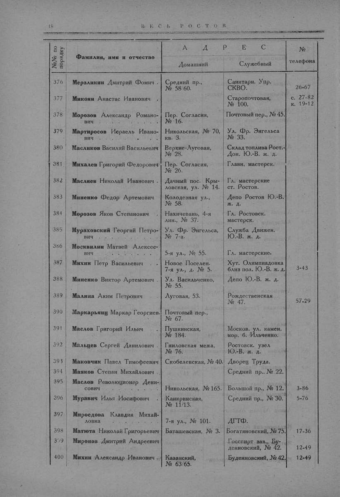

Лист источника 66
Скан

Распознанный текст
18 ВЕСЬ РОСТОВ
№№ по
порядку Фамилия, имя и отчество А Д Р Е С №
телефона
Домашний Служебный
376 Мерзликин Дмитрий Фомич Средний пр.,
№ 58/60. Санитарн. Упр.
СКВО. 26-67
377 Микоян Анастас Иванович . . . . Старопочтовая,
№ 100. с. 27-82
к. 19-12
378 Морозов Александр Романо-
вич Пер. Согласия,
№ 16. Почтовый пер., № 45.
379 Мартиросов Исраель Ивано-
вич Никольская, № 70,
кв. 3. Ул. Фр. Энгельса
№ 33.
380 Масликов Василий Васильевич Верхне-Луговая,
№ 28. Склад топлива Рост.-
Дон. Ю.-В. ж. д.
381 Михалев Григорий Федорович Пер. Согласия,
№ 26. Главн. мастерск.
382 Масляев Николай Иванович Дачный пос. Кры-
ловская, ул. № 14. Гл. мастерские
ст. Ростов.
383 Миненко Федор Артемович Колодезная ул.,
№ 58. Депо Ростов Ю.-В.
ж. д.
384 Морозов Яков Степанович . Нахичевань, 4-я
лин., № 37. Гл. Ростовск.
мастерск.
385 Мураховский Георгий Петро-
вич Ул. Фр. Энгельса,
№ 7-а. Служба Движен.
Ю.-В. ж. д.
386 Москвилин Матвей Алексее-
вич 5-я ул., № 55. Гл. мастерские.
387 Михин Петр Васильевич . . Новое Поселен.
7-я ул., д. № 5. Хут. Олимпиадовка
близ пол. Ю.-В. ж. д. 3-43
388 Миненко Виктор Артемович . Ул. Васильченко,
№ 55. Депо Ю.-В. ж. д.
389 Малина Аким Петрович Луговая, 53. Рождественская
№ 47. 57-29
390 Маркарьянц Маркар Георгиев. Почтовый пер.,
№ 67.
391 Маслов Григорий Ильич Пушкинская,
№ 184. Москов. ул. камен.
кор. б. Ильченко.
392 Мальцев Сергей Данилович . Гниловская межа,
№ 76. Ростовск. узел
Ю.-В. ж. д.
393 Маковчик Павел Тимофеевич Скобелевская, № 40. Дворец Труда.
394 Маяков Степан Михайлович Средний пр., № 22.
395 Маслов Революционер Дени-
сович Никольская, № 165. Большой пр., № 12. 3-86
396 Муравич Илья Иосифович Канкринская,
№ 11/13. Средний пр., № 30. 5-76
397 Мироедова Клавдия Михай-
ловна 7-я ул., № 101. ДГТФ.
398 Матюта Николай Григорьевич Баташевская, № 3. Богатяновский, № 75. 17-36
399 Миронов Дмитрий Андреевич Госспирт зав., Бу-
денновский, № 42. 12-49
400 Михин Александр Иванович Казанский,
№ 63/65. Буденновский, № 42. 12-49